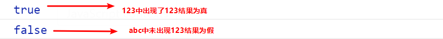

JavaScript-day09
课程目标：
- 正则表达式
- 正则表达式相关的方法
1.正则表达式概述
1.1 什么是正则表达式
正则表达式（ Regular Expression ）是用于匹配字符串中字符组合的模式。在JavaScript中，正则表达式也是对象。
正则表达式通常被用来检索、替换那些符合某个模式（规则）的文本，例如验证表单：用户名表单只能输入英文字母、数字或者下划线， 昵称输入框中可以输入中文(匹配)。此外，正则表达式还常用于过滤掉页面内容中的一些敏感词(替换)，或从字符串中获取我们想要的特定部分(提取)等 。
其他语言也会使用正则表达式，本阶段我们主要是利用JavaScript 正则表达式完成表单验证。
1.2 正则表达式的特点
- 灵活性、逻辑性和功能性非常的强。
- 可以迅速地用极简单的方式达到字符串的复杂控制。
- 对于刚接触的人来说，比较晦涩难懂。比如：/^\w+([-+.]\w+)@\w+([-.]\w+).\w+([-.]\w+)*$/
- 实际开发,一般都是直接复制写好的正则表达式. 但是要求会使用正则表达式并且根据实际情况修改正则表达式. 比如用户名: /^[a-z0-9_-]{3,16}$/
2. 正则表达式在js中的使用
2.1 正则表达式的语法
/正则表达式主体/修饰符(可选)
2.2 正则表达式的创建
在 JavaScript 中，可以通过两种方式创建一个正则表达式。
方式一：通过调用RegExp对象的构造函数创建
var regexp = new RegExp(/123/);
console.log(regexp);
方式二：利用字面量创建 正则表达式
var rg = /123/;
2.3 测试正则表达式
2.3.1 test方法
test() 正则对象方法，用于检测字符串是否符合该规则，该对象会返回 true 或 false，其参数是测试字符串。
var rg = /123/;
console.log(rg.test(123));//匹配字符中是否出现123 出现结果为true
console.log(rg.test('abc'));//匹配字符中是否出现123 未出现结果为false

2.3.2 exec方法
var rg = /friend/;
var s = "trouble is a friend";
var res = rg.exec(s);
//["friend", index: 13, input: "trouble is a friend", groups: undefined]
console.log(res);//返回数组
3. 正则表达式中的特殊字符
3.1 正则表达式的组成
一个正则表达式可以由简单的字符构成，比如 /abc/，也可以是简单和特殊字符的组合，比如 /ab*c/ 。其中特殊字符也被称为元字符，在正则表达式中是具有特殊意义的专用符号，如 ^ 、$ 、+ 等。
特殊字符非常多，可以参考：
3.2 边界符
正则表达式中的边界符（位置符）用来提示字符所处的位置，主要有两个字符
| 边界符 | 说明 |
|---|---|
| ^ | 表示匹配行首的文本（以谁开始） |
| $ | 表示匹配行尾的文本（以谁结束） |
如果 ^和 $ 在一起，表示必须是精确匹配。
var rg = /abc/; // 正则表达式里面不需要加引号 不管是数字型还是字符串型
// /abc/ 只要包含有abc这个字符串返回的都是true
console.log(rg.test('abc'));
console.log(rg.test('abcd'));
console.log(rg.test('aabcd'));
console.log('---------------------------');
var reg = /^abc/;
console.log(reg.test('abc')); // true
console.log(reg.test('abcd')); // true
console.log(reg.test('aabcd')); // false
console.log('---------------------------');
var reg1 = /^abc$/; // 精确匹配 要求必须是 abc字符串才符合规范
console.log(reg1.test('abc')); // true
console.log(reg1.test('abcd')); // false
console.log(reg1.test('aabcd')); // false
console.log(reg1.test('abcabc')); // false
3.3 字符类
字符类表示有一系列字符可供选择，只要匹配其中一个就可以了。所有可供选择的字符都放在方括号内。
3.3.1 [ ] 方括号
表示有一系列字符可供选择，只要匹配其中一个就可以了
var rg = /[abc]/; // 只要包含有a 或者 包含有b 或者包含有c 都返回为true
console.log(rg.test('andy'));//true
console.log(rg.test('baby'));//true
console.log(rg.test('color'));//true
console.log(rg.test('red'));//false
var rg1 = /^[abc]$/; // 三选一 只有是a 或者是 b 或者是c 这三个字母才返回 true
console.log(rg1.test('aa'));//false
console.log(rg1.test('a'));//true
console.log(rg1.test('b'));//true
console.log(rg1.test('c'));//true
console.log(rg1.test('abc'));//false
----------------------------------------------------------------------------------
var reg = /^[a-z]$/ //26个英文字母任何一个字母返回 true - 表示的是a 到z 的范围
console.log(reg.test('a'));//true
console.log(reg.test('z'));//true
console.log(reg.test('A'));//false
-----------------------------------------------------------------------------------
//字符组合
var reg1 = /^[a-zA-Z0-9]$/; // 26个英文字母(大写和小写都可以)任何一个字母返回 true
------------------------------------------------------------------------------------
//取反 方括号内部加上 ^ 表示取反，只要包含方括号内的字符，都返回 false 。
var reg2 = /^[^a-zA-Z0-9]$/;
console.log(reg2.test('a'));//false
console.log(reg2.test('B'));//false
console.log(reg2.test(8));//false
console.log(reg2.test('!'));//true
3.3.2 量词符
量词符用来设定某个模式出现的次数。
| 量词 | 说明 |
|---|---|
| * | 重复0次或更多次 |
| + | 重复1次或更多次 |
| ? | 重复0次或1次 |
| {n} | 重复n次 |
| {n,} | 重复n次或更多次 |
| {n,m} | 重复n到m次 |
3.3.3 案例
输入框的用户名只能为英文字母,数字,下划线或者短横线组成, 并且用户名长度为6~16位。
3.3.4 括号总结
1.大括号 量词符. 里面表示重复次数
2.中括号 字符集合。匹配方括号中的任意字符.
3.小括号表示优先级
3.4 元字符
元字符指的是某些常见模式的简写方式.
| 元字符 | 描述 |
|---|---|
| \d | 匹配0-9之间的任一数字，相当于[0-9] |
| \D | 匹配所有0-9以外的字符，相当于[^0-9] |
| \w | 匹配任意的字母、数字和下划线，相当于[A-Za-z0-9_] |
| \W | 除所有字母、数字、下划线以外的字符，相当于[^A-ZA-Z0-9_] |
| \s | 匹配空格（包括换行符、制表符、空格符等），相当于[\t\r\n\v\f] |
| \S | 匹配非空格的字符，相当于[^\t\r\n\v\f] |
| . | 匹配除\n \r以外的任意字符，如果需要只匹配点（.），需要在正则里用转义字符\.替代. |
案例:验证座机号码
var reg = /^(0\d{2}-\d{8})|(0\d{3}-\d{7})$/;
案例:表单验证
//手机号验证:
/^1[3-9]\d{9}$/;
//QQ号验证:
/^[1-9]\d{4,10}$/;
//昵称验证:
/^[\u4e00-\u9fa5]{2,8}$/
//密码验证:
/^[a-zA-Z0-9_-]{6,16}$/
案例：
// 验证有 1-3 位小数的正实数。
/^([1-9]\d*|0)\.[0-9]{1,3}$/
3.5 竖杠(|)
var rg = /lucy|lily/g;
var s = "lucy is a pretty girl, so I choose lily";
var res = rg.exec(s);
console.log(res);
res = rg.exec(s);
console.log(res);
res = rg.exec(s);
console.log(res);
//----------------------------------------------
var rg = /lucy|lily/g;
var s = "lucy is a pretty girl, so I choose lily";
do {
var res = rg.exec(s);
if (res) {
console.log(res);
}
} while (res != null)
3.6 小括号
小括号表示优先级
var reg = /^abc{3}$/;
console.log(reg.test('abc'));//false
console.log(reg.test('abcabcabc'));//false
console.log(reg.test('abccc'));//true
var reg = /^(abc){3}$/; // 它是让abc重复三次
console.log(reg.test('abc'));//false
console.log(reg.test('abcabcabc'));//true
console.log(reg.test('abccc'));//false
小阔号还有分组功能
var rg = /l(uc|il)y/g;
var s = "lucy";
var res = r.exec(s);
// ["lucy", "uc", index: 0, input: "lucy", groups: undefined]
console.log(res);
// 取出分组里的内容，取第几个分组的数据就写几
console.log(res[1]);
// 命名组
var r = /l(?<test>uc|li)y/;
var s = "lucy";
var res = r.exec(s);
console.log(res.groups.test);
案例：
// 判断一个邮箱是否合法
// 要求:
// 1、@前面有6-20位字母数字组成的字符串
// 2、邮箱有qq、163、126三种
// 3、邮箱最后以com或cn结尾
4. 正则表达式相关的修饰符和方法
4.1 正则表达式修饰符
| 修饰符 | 描述 |
|---|---|
| i | 执行对大小写不敏感的匹配 |
| g | 执行全局匹配（查找所有匹配而非在找到第一个匹配后停止） |
| m | 执行多行匹配，字符串中有\n，一般和^或$配合使用，多行匹配时还要加上g修饰符 |
使用方法：
// 字面量方式定义的正则表达式
var r = /lucy/gi;
// 通过构造函数创建的正则表达式
var r = new RegExp('lucy','gi');
4.2 字符串常用方法
| 方法名 | 说明 |
|---|---|
| s.match(regexp/substr) | 找到一个或多个与子串/正则表达式的匹配，返回数组 |
| s.search(regexp/substr) | 检索字符串中指定的子串或与正则表达式相匹配的子串，找到了返回第一个的索引，找不到返回-1，只能返回匹配到的第一个索引 |
| s.replace(regexp/substr,replacement) | 替换一个或多个与子串/正则表达式匹配的子串 |
match和search方法类似于正则表达式的exec和test方法。
match案例
// 从一篇文章当中匹配所有的电话号码
//var str = 'siddadadhajdh13545864795asudgaskhdaksjdhfsfdd13545854569jsfhkajdaksdjadkjd15648795684';
正则替换replace
replace() 方法可以实现替换字符串操作，用来替换的参数可以是一个字符串或是一个正则表达式。
var str = 'andy和red';
var newStr = str.replace('andy', 'baby');
console.log(newStr)//baby和red
//等同于 此处的andy可以写在正则表达式内
var newStr2 = str.replace(/andy/, 'baby');
console.log(newStr2)//baby和red
//全部替换
var str = 'abcabc'
var nStr = str.replace(/a/,'哈哈')
console.log(nStr) //哈哈bcabc
//全部替换g
var nStr = str.replace(/a/g,'哈哈')
console.log(nStr) //哈哈bc哈哈bc
//忽略大小写i
var str = 'aAbcAba';
var newStr = str.replace(/a/gi,'哈哈')//"哈哈哈哈bc哈哈b哈哈"
案例:
// 过滤敏感词汇
var s = "点开下方链接，和我一起在线激情吧！"
var new_s = s.replace(/激情|gay/g, '**');
// 把手机号的中间4位替换为****
var str = '13163257436';
var patt = /^\d{3}(\d{4})\d{4}$/;
var mat = str.match(patt);
console.log(mat);
var new_s = str.replace(mat[1], "****");
console.log(new_s);